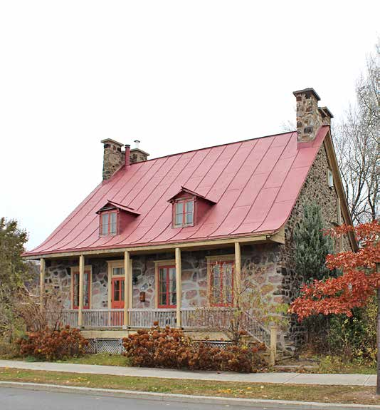
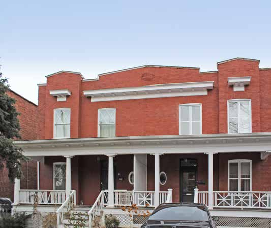
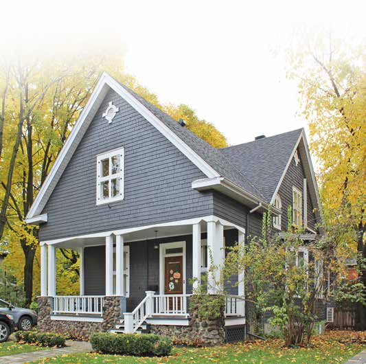
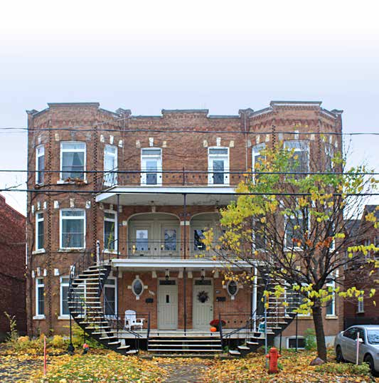

1700–1830 · French tradition — riverside farms of Mouillepied
1700 – 1830The stone farmhouses of the riverside farms, French tradition then Québécois synthesis: steep gable, massive chimneys, small-paned casements, and later the flared eave, the gallery and a symmetrical front. Maison Marsil (mid-18th century) is the classified survivor.
1700–1830 · 1700 – 1830 · Répertoire des courants architecturaux, fiche 1
Style: French-regime rural house / Québec neoclassical

The oldest houses in town: low stone farmhouses under a steep gable, later "quebecised" with a flared eave, more windows, a symmetrical front and a gallery. Almost nothing decorates them beyond a painted wooden surround, and the fiche wants it kept that way.
Where it comes fromThe French-regime rural house of the seigneurie of La Prairie de la Magdeleine (the riverside strip known as Mouillepied), and its 19th-century synthesis with English neoclassicism, the maison traditionnelle québécoise, which "domine le paysage bâti … de 1830 à 1880 environ". Houses built under the French regime were often altered later to take on the Québécois traits.
What Répertoire des courants architecturaux says about this type ›
Siting & landscape
- The oldest current in Saint-Lambert; the French-tradition model covers the 18th and early 19th century (1700–1830), the Québécois synthesis about 1830–1880.
- Former farmhouses that once lined the St. Lawrence.
Massing
- Rectangular body of one and a half storeys, little raised above the ground.
- Two-slope roof, straight or with a curved base, fairly steep.
- Full-length wood gallery on the main façade, sheltered by the roof's eave (larmier); massive stone chimneys at the roof ends.
- Corps de bâtiment rectangulaire d'un étage et demi peu exhaussé du sol. Toit à deux versants droits ou à base recourbée présentant une pente assez forte.
- La galerie, s'étendant sur toute la longueur de la façade principale et protégée par le larmier du toit, est construite en bois. … Des cheminées massives en pierre sont présentes aux extrémités du toit.
Articulation
- Ornament is spare; often the only decorative element is a wooden surround (chambranle) around the openings, painted in a colour contrasting with the walls.
- British influence shows in the curved roof extension, more openings, rigorous symmetry, the front gallery and classical decorative touches.
- L'ornementation est plutôt dépouillée. Bien souvent, le seul élément décoratif présent est un chambranle en bois autour des ouvertures.
Openings
- Traditional wood doors with glazing.
- Two-leaf wood casements with 12 to 24 small panes or 6 large panes.
- Small gabled dormers.
- Portes en bois traditionnelles avec vitrage.
- Fenêtres à deux battants en bois munies de 12 à 24 petits carreaux ou de 6 grands carreaux.
- Lucarnes à pignon de petites dimensions.
Materials
- Stone walls (French tradition); roughcast or wood.
- Roof: traditional sheet metal (à baguettes, à la canadienne, pincée) or cedar shingle.
- Pour les murs extérieurs en pierre, aucun matériau d'imitation n'est acceptable. … Pour la toiture, la tôle traditionnelle (à baguettes, à la canadienne ou pincée) et le bardeau de cèdre sont à privilégier.
Conservation guidance (fiche)- No imitation stone; do not paint masonry; replace roughcast or wood with identical material; industrial materials (aluminium, vinyl, wood composite, fibre cement) proscribed.
- Asphalt shingle, industrial-looking sheet metal and synthetics proscribed on the roof.
- Do not remove or narrow the gallery; railings in painted wood of traditional make, not metal or prefab-look treated wood.
- Steel or PVC doors unsuitable; avoid guillotine, sliding, single-leaf crank, undivided, aluminium or PVC windows (a wood crank window imitating the large-pane casement is acceptable); do not add dormers to a roof that has none.
- Do not raise foundations or change roof pitch; enlarge at the side or rear, reduced in volume, same roof form, set back from the front; never in front or flush with the main façade.
- Do not overload with decorative elements.
1830–1880 · The Québécois synthesis and the coming of bridge and rail
1830 – 1880The maison traditionnelle québécoise dominates until about 1880. In the middle of the period the town's future is decided elsewhere: the railway reaches the shore about 1852, the Victoria Bridge opens in 1859, and Saint-Lambert is erected as a municipality in 1857.
1875–1930 · The commuter suburb builds out
1875 – 1930The commuter suburb. Second Empire mansards from about 1875, Queen Anne from the 1890s, Boomtown boxes with false mansards or brick parapets from 1900, Four Squares and Arts and Crafts cottages in the same decades, and the Montréal plex imported by developers. Streets are laid out over the farm lots (Victoria Park 1889, Brooklyn Park 1894); the interurban arrives in 1909; the town becomes a cité in 1921.
1875–1930 · 1875 – 1930 · Répertoire des courants architecturaux, fiche 2
Style: Second Empire / mansard

Two storeys under a mansard: the steep lower slope carries the dormers, the gallery has its own little roof, and the woodwork on dormers and eaves is where the money went. Sometimes the gable turns to face the street; sometimes a turret makes it bourgeois.
Where it comes fromSecond Empire (Napoléon III, 1852–70) reached North America through the United States around 1870, first on public buildings, then on prosperous houses, then on modest ones for which "son influence se limite au toit mansardé", a roof whose broken slopes give more room upstairs for large families.
What Répertoire des courants architecturaux says about this type ›
Siting & landscape
- Well represented in Saint-Lambert over a long period, about 1875 to 1925; variants with two- or four-slope mansards, semi-detached pairs, and from the early 20th century a gable-to-street model; some dressed up as bourgeois houses with turrets and gables.
Massing
- Rectangular body of two storeys, moderately raised above the ground; mansard (broken) roof with two or four slopes; the gable wall may face the street.
- Wood gallery sheltered by an awning independent of the main roof; a brick chimney generally on the roof.
- Corps de bâtiment rectangulaire de deux étages, moyennement exhaussé du sol. Toit mansardé (ou brisé) à deux ou à quatre versants. Le mur pignon peut être orienté vers la rue.
- Une galerie en bois est protégée par une toiture indépendante (auvent) du toit principal. … Une cheminée en brique est généralement présente sur le toit.
Articulation
- Decorative woodwork on the gallery, the dormers and the roof edges; on wood- or light-clad houses, chambranles around openings and corner boards.
- Des boiseries décoratives ornent la galerie, les lucarnes et les rives de la toiture. Pour les résidences revêtues de bois ou d'un matériau léger, on retrouve couramment des planches de finition, appelées chambranles, autour des ouvertures ainsi que des planches cornières aux angles des murs.
Openings
- Traditional wood doors with glazing.
- Two-leaf wood casements with six large panes, or guillotine windows.
- Dormers of various shapes piercing the steep lower slope (brisis).
- Portes en bois traditionnelles avec vitrage.
- Fenêtres à deux battants en bois munies de six grands carreaux ou fenêtres à guillotine.
- Lucarnes de différentes formes qui percent la partie basse et abrupte de la toiture (brisis).
Materials
- Brick, roughcast or wood walls.
- Roof: traditional sheet metal (à baguettes, pincée, à la canadienne) or slate; galvanised traditional metal can be repaired and repainted.
- Pour les murs extérieurs en brique, aucun matériau d'imitation n'est acceptable. … Pour la toiture, la tôle traditionnelle (à baguettes, pincée ou à la canadienne) et l'ardoise sont à privilégier.
Conservation guidance (fiche)- No imitation brick; do not paint masonry; identical replacement for roughcast/wood; industrial claddings proscribed; asphalt shingle, industrial-look metal and synthetics proscribed on the roof.
- Do not remove or resize the gallery; painted wood railings of traditional make.
- Steel/PVC doors unsuitable; avoid sliding, single-leaf crank, undivided, aluminium or PVC windows.
- Do not raise foundations or change roof pitch; side/rear reduced-volume additions only.
1875–1930 · 1875 – 1930 · Répertoire des courants architecturaux, fiche 3
Style: Queen Anne

The town's signature Victorian: turrets, gables, oriels, a columned gallery, patterned shingles, everything asymmetrical and everything ornamented. Rarely textbook-pure in Saint-Lambert, but its vocabulary is everywhere on the streets laid out after 1889.
Where it comes fromOne of the late-Victorian eclectic currents (with neo-Gothic, neo-Romanesque, neo-Tudor, neo-Renaissance), named after Queen Anne Stuart's reign (1665–1714) and characterised by "effets ornementaux d'inspiration pittoresque et classique". Its Saint-Lambert examples (Maison Desaulniers 1909, Maison O'Neill 1913) belong to the Anglo-Protestant streetcar-suburb build-out.
What Répertoire des courants architecturaux says about this type ›
Siting & landscape
- A strong presence in Saint-Lambert; the influence begins in the 1890s and persists to the early 1930s. Few perfect examples, many houses, detached or semi-detached, borrowing its elements.
Massing
- Rectangular or irregular plan of two and a half storeys, moderately raised; two- or four-slope roof of medium pitch; detached or semi-detached.
- Asymmetrical façade articulated by numerous projections: towers, turrets, gables, oriels, bays, galleries, verandas, porches; wood gallery and porch under an awning.
- Corps de bâtiment rectangulaire ou de plan irrégulier de deux étages et demi, moyennement exhaussé du sol, avec toit à deux ou à quatre versants à pente moyenne. La maison peut être isolée ou jumelée.
- La façade présente une composition asymétrique et est articulée par de nombreuses saillies (tours, tourelles, pignons, oriels, baies en saillie, galeries, vérandas, porches). La galerie et le porche, protégés par un auvent, sont construits en bois.
Articulation
- Elaborate ornament drawing on the classical and picturesque repertoires: classical columns or piers, pediments and worked railings on the gallery; gables and turrets on the roof; cornices underlining the eaves; wood shingle cladding sometimes in decorative patterns.
- Les ornements sont élaborés et puisent dans les répertoires classique et pittoresque. Des boiseries décoratives (colonnes ou piliers classiques, frontons et garde-corps ouvragés) agrémentent la galerie, alors que des pignons et des tourelles ornent la toiture. Des corniches soulignent les débords de toit. Les revêtements en bardeau de bois présentent parfois des motifs décoratifs.
Openings
- Traditional wood doors with glazing.
- Wood casements, sometimes with transom, or guillotine windows.
- Dormers of various models.
- Portes en bois traditionnelles avec vitrage.
- Fenêtres à battants en bois, parfois avec imposte, ou fenêtres à guillotine selon le modèle utilisé à l'origine.
- Lucarnes de différents modèles.
Materials
- Brick, or wood (clapboard or shingle).
- Roof: traditional sheet metal or slate; industrial metal acceptable only if screws are hidden and it recalls traditional metal.
- Pour les murs extérieurs en brique, aucun matériau d'imitation n'est acceptable. … Pour les murs en bois (planche à clins ou bardeau), favoriser le remplacement par un matériau identique. … Pour le toit, la tôle traditionnelle (à baguettes, pincée ou à la canadienne) et l'ardoise sont à privilégier.
Conservation guidance (fiche)- No imitation brick; do not paint masonry; identical replacement for wood cladding; industrial claddings proscribed; asphalt shingle and synthetics proscribed on the roof.
- Railings in painted wood or wrought iron of traditional make; oriels, gables and bays maintained with care.
- Steel/PVC doors unsuitable; avoid sliding, crank, undivided, aluminium or PVC windows.
- Do not raise foundations or change pitches; side/rear reduced-volume additions only.
1875–1930 · 1875 – 1930 · Répertoire des courants architecturaux, fiche 4
Style: Boomtown (false front) / Second Empire / mansard

A flat-roofed brick house wearing a mansard as a hat. Montréal builders bolted the steep lower slope of a Second Empire roof onto the front of a cheap Boomtown box, hung dormers half in the wall and half in the slope, and dressed the lot in turned wood. It sits at the head of the Boomtown family and links Saint-Lambert to Mount Royal's "maison faubourienne".
Where it comes from"Un amalgame intéressant entre la construction à toit plat avec couronnement et l'habitation à mansarde d'influence Second Empire": from the late 19th century Montréal contractors combined the modernity and low cost of the flat-roofed Boomtown house with the elegance of the mansard, plating the brisis onto the façade as a crown. Like the true mansard house it ran out of steam from the 1910s.
What Répertoire des courants architecturaux says about this type ›
Siting & landscape
- A Montréal model that enjoyed real popularity in Saint-Lambert on detached and semi-detached houses; fades from the 1910s in favour of plainer buildings.
Massing
- Rectangular body of two storeys, moderately raised; flat or gently rear-sloping roof with a false mansard as crown; detached or semi-detached.
- Wood gallery under an awning independent of the main roof; verandas and oriels also in wood.
- Corps de bâtiment rectangulaire de deux étages, moyennement exhaussé du sol, à toit plat ou à faible pente vers l'arrière avec fausse mansarde. La maison peut être isolée ou jumelée.
- Une galerie en bois est protégée par une toiture indépendante (auvent) du toit principal. … Les vérandas et les oriels (bow-windows) doivent aussi être en bois.
Articulation
- Second Empire décor confined to the crown, with elaborate woodwork: pendant dormers half in the wall and half in the false mansard, ornamented like the cornice and the gallery.
- Decorative woodwork on the gallery (worked piers, railings, brackets) and on the dormers; a cornice usually marks the base of the false mansard; chambranles and corner boards on wood-clad houses; uniformity between the two units of a semi-detached pair.
- Des boiseries décoratives ornent la galerie (piliers ouvragés, garde-corps et aisseliers) et les lucarnes. Une corniche décore habituellement le bas de la fausse mansarde. … Pour les maisons jumelées, s'assurer d'une uniformité entre les deux unités.
Openings
- Traditional wood doors with glazing.
- Two-leaf wood casements with six large panes, or guillotine windows.
- Pendant gabled dormers piercing the false mansard, often elaborately ornamented.
- Portes en bois traditionnelles avec vitrage.
- Fenêtres à deux battants en bois munies de six grands carreaux ou fenêtres à guillotine selon le modèle utilisé à l'origine.
- Lucarnes pendantes à pignon qui percent la fausse mansarde. … L'ornementation des lucarnes est souvent élaborée.
Materials
- Brick, roughcast or wood walls.
- False mansard in traditional sheet metal (à baguettes, pincée, en plaques) or slate.
- Pour les murs extérieurs en brique, aucun matériau d'imitation n'est acceptable. … Pour la fausse mansarde, la tôle traditionnelle (à baguettes, pincée ou en plaques) et l'ardoise sont à privilégier.
Conservation guidance (fiche)- No imitation brick; do not paint masonry; identical replacement for roughcast/wood; industrial claddings proscribed; asphalt shingle, industrial metal and synthetics proscribed on the false mansard.
- Do not remove or resize the gallery; painted wood railings of traditional make; verandas and oriels in wood.
- Steel/PVC doors unsuitable; avoid sliding, crank, undivided, aluminium or PVC windows.
- Do not raise foundations or alter the false mansard's dimensions; side/rear reduced-volume additions only.
1875–1930 · 1875 – 1930 · Répertoire des courants architecturaux, fiche 5
Style: Boomtown (false front)

The plain workers' box of the industrial city, two storeys of brick under a flat roof, whose only vanity is its top edge: a fat cornice or a brick parapet, stepped, gabled, cut or patterned. What Mount Royal's by-law calls the faubourg house is this building on a suburban lot.
Where it comes from"Typiquement américain", devised in the late 19th century to house workers fast and cheaply in the boom towns of the industrial United States; originally a low rear-sloping roof hidden by parapet or cornice, generalised to a true flat roof once roofing technology allowed, in the early 20th century.
What Répertoire des courants architecturaux says about this type ›
Siting & landscape
- Very present in Saint-Lambert; covers 1900 to 1930, the period of the town's main growth. Detached, semi-detached and terrace houses.
Massing
- Rectangular body of two storeys, moderately raised; flat or gently rear-sloping roof finished with a crown, parapet or cornice; detached or semi-detached.
- Wood gallery or porch under an awning; oriels or projecting bays may replace the gallery.
- Corps de bâtiment rectangulaire de deux étages, moyennement exhaussé du sol, avec toit plat ou à faible pente vers l'arrière doté d'un couronnement (parapet ou corniche). La maison peut être isolée ou jumelée.
- Une galerie ou un porche en bois sont protégés par un auvent. … Les oriels ou des avancées peuvent remplacer la galerie.
Articulation
- Ornament concentrated in the crown of the façade: prominent worked cornices, or brick parapets of many forms, stepped, gabled, cut out, or patterned with brickwork.
- Woodwork on galleries and porches: worked piers, railings, brackets.
- Les ornements sont surtout concentrés dans le couronnement de la façade. Corniches ouvragées ainsi que parapets ornés de jeux de brique ou découpés de diverses façons …, tout comme les boiseries (piliers ouvragés, garde-corps et aisseliers) ornant les galeries et les porches.
Openings
- Wood doors with glazing.
- Wood casements or guillotine windows according to the original model.
- Portes en bois avec vitrage.
- Fenêtres à battants en bois ou fenêtres à guillotine selon le modèle utilisé à l'origine.
Materials
- Brick (no imitation, unpainted); wood elsewhere.
- Pour les murs extérieurs en brique, aucun matériau d'imitation n'est acceptable. Éviter de peindre la maçonnerie. Pour les murs en bois, favoriser des matériaux identiques lors de leur remplacement.
Conservation guidance (fiche)- No imitation brick; do not paint masonry; identical wood replacement; industrial claddings proscribed.
- Railings in painted wood or wrought iron of traditional make.
- Steel/PVC doors unsuitable; avoid sliding, crank, undivided, aluminium or PVC windows.
- Do not raise foundations or add a pitched roof; side/rear reduced-volume additions only.
1875–1930 · 1875 – 1930 · Répertoire des courants architecturaux, fiche 6
Style: American Foursquare

The Four Square: a big brick cube under a pyramid roof, roomy enough for large families, cheap enough because its parts came by catalogue. Sober by nature; the porch woodwork, a brick pattern and the exposed rafter tails are its ornaments.
Where it comes fromProduct of standardised materials and prefabricated components orderable by catalogue, hence "abordable et facile à construire", popular in village, town and country alike in the first decades of the 20th century.
What Répertoire des courants architecturaux says about this type ›
Siting & landscape
- Appeared in the United States at the end of the 19th century and took hold in Québec in the first decades of the 20th; numerous in Saint-Lambert; variants from wealthy families' residences to semi-detached pairs for the middle class.
Massing
- Square or rectangular body of two storeys, slightly raised; pyramidal four-slope (pavilion) or hipped roof; detached or semi-detached.
- Projections may be added: forebodies, oriels, entrance vestibules; wood gallery or porch under an awning; oriels, verandas and gables in their traditional material.
- Corps de logis de plan carré ou rectangulaire de deux étages, légèrement exhaussé du sol avec toit pyramidal à quatre versants (toiture en pavillon) ou à croupes. La maison peut être isolée ou jumelée.
- Une galerie ou un porche, protégés par un auvent, sont construits en bois. … Les oriels et les vérandas ainsi que les pignons doivent conserver leur matériau traditionnel.
Articulation
- Ornament rather sober: decorative woodwork on gallery or porch, brick patterns, exposed rafter ends (chevrons) at the base of the roof.
- Les ornements sont plutôt sobres. Des boiseries décoratives ornent la galerie ou le porche, des jeux de briques forment des motifs et des chevrons sont apparents à la base du toit.
Openings
- Wood doors with glazing, with or without transom.
- Wood casements or guillotine windows, with or without muntins, per the original.
- Hipped or shed (rampantes) dormers.
- Portes en bois avec vitrage, avec ou sans imposte.
- Fenêtres à battants en bois ou fenêtres à guillotine avec ou sans carreaux selon le modèle utilisé à l'origine.
- Lucarnes à croupe ou rampantes.
Materials
- Almost always brick.
- Roof: traditional sheet metal preferred; asphalt shingle acceptable if original.
- Pour les murs extérieurs en brique, aucun matériau d'imitation n'est acceptable … Pour le toit, la tôle traditionnelle (à baguettes, pincée ou à la canadienne) est à privilégier. Le bardeau d'asphalte est acceptable s'il s'agit du matériau d'origine.
Conservation guidance (fiche)- No imitation brick; do not paint masonry; keep brick and mortar sound; industrial claddings proscribed; on the roof, plastic and other synthetics proscribed.
- Railings in painted wood or wrought iron of traditional make.
- Steel/PVC doors unsuitable unless perfect imitations; avoid sliding, crank, undivided, aluminium or PVC windows.
- Do not raise foundations or change pitches; side/rear reduced-volume additions only.
1875–1930 · 1875 – 1930 · Répertoire des courants architecturaux, fiche 7
Style: Arts and Crafts / Craftsman / Shingle Style

Low, broad and shingled or roughcast, with a roof that breaks into different slopes and a porch big enough to live on. Ornament is the structure itself: exposed rafters, a bit of half-timbering, brackets under the porch roof. Scattered rather than clustered in Saint-Lambert.
Where it comes fromArts and Crafts (Morris, Ruskin) reached the United States and merged with Shingle Style and Craftsman, spread by mail-order plan catalogues; in Montréal it produced a return of English house types and of New France forms, but "à Saint-Lambert, ce sont les modèles américains qui perpétuent le mouvement pittoresque". Cousin of Mount Royal's Garden City house, hence the shared canonical type.
What Répertoire des courants architecturaux says about this type ›
Siting & landscape
- Found here and there in Saint-Lambert, built in the first half of the 20th century; American models carry the picturesque movement locally.
Massing
- One-and-a-half-storey body with an articulated plan (projections and forebodies) and pitched roofs of varied shapes and unequal slope lengths.
- Several covered projections, galleries, balconies, porches, verandas, on all façades; gables, turrets, oriels and bays frequent; a generously sized gallery.
- Corps de bâtiment d'un étage et demi au plan articulé (excroissances et avancées) avec toit en pente de formes variées et aux versants de longueurs inégales.
- La maison Arts and Crafts possède généralement plusieurs saillies couvertes – galeries, balcons, porches et vérandas – sur l'ensemble de ses façades. Des pignons, des tourelles, des oriels et des baies en saillie sont également fréquents.
Articulation
- Sober ornament: chambranles and corner boards on wood-clad houses; traditional structural members (half-timbering, rafters) used as ornament; galleries with worked posts and brackets.
- La maison d'influence Arts and Crafts possède habituellement une ornementation sobre. … certains éléments de charpente traditionnels, comme des colombages ou des chevrons, servent d'ornements. Les galeries sont souvent parées de boiseries décoratives avec des poteaux ouvragés et des aisseliers.
Openings
- Wood doors with glazing, with or without transom.
- Wood casements or guillotine windows, with or without muntins, varied in shape and size.
- Dormers of varied models.
- Portes en bois avec vitrage, avec ou sans imposte.
- Fenêtres à battants en bois ou fenêtres à guillotine avec ou sans carreaux, de formes et de dimensions variées.
- Lucarnes de modèles variés.
Materials
- Brick, roughcast, cedar shingle or wood clapboard.
- Roof: traditional sheet metal preferred; cedar shingle, tile and asphalt shingle acceptable.
- Les murs extérieurs des maisons d'influence Arts and Crafts peuvent être en brique, en crépi, en bardeau de cèdre ou en clin de bois. … Pour le toit, la tôle traditionnelle … est à privilégier, mais le bardeau de cèdre, la tuile et le bardeau d'asphalte sont acceptables.
Conservation guidance (fiche)- Natural materials only; no imitation; industrial claddings and plastic proscribed.
- Wood projections maintained and repainted; ornament kept or reproduced; do not overload, "la sobriété reste de mise".
- Steel/PVC doors unsuitable unless perfect imitations; avoid sliding, crank, undivided, aluminium or PVC windows.
- Do not raise foundations or change pitches; side/rear reduced-volume additions only.
1875–1930 · 1875 – 1930 · Répertoire des courants architecturaux, fiche 9
Style: Montréal faubourg vernacular / Boomtown (false front)

The Montréal plex on the South Shore: stacked flats behind stacked galleries, outside stairs, a brick crown of cornice or parapet. Saint-Lambert's version is the fiche's own summary of what the Plateau's typology splits into duplex, triplex and multiplex.
Where it comes from"La densification des villes, au début du 20e siècle, entraîne la prolifération d'immeubles à logements multiples … une forme d'habitation populaire se développe à grande échelle à Montréal : le plex", whose success in certain Montréal districts led promoters to build it in Saint-Lambert. For the type's genesis in the 1880s by-laws see the Plateau-Mont-Royal page.
What Répertoire des courants architecturaux says about this type ›
Siting & landscape
- Early 20th-century densification model imported from Montréal by developers; usually party-wall, may be semi-detached (quadruplex, quintuplex) or repeated in rows.
Massing
- Rectangular body of two or three storeys, moderately raised, flat roof.
- Almost always superposed galleries and balconies on the main façade and, for plexes, exterior stairs; oriels or projecting bays may articulate the façade.
- Some multi-dwelling buildings have shared entrances or stairs serving several units; usually three storeys, with galleries and balconies so each family has private outdoor space.
- Corps de bâtiment rectangulaire de deux ou de trois étages, moyennement exhaussé du sol, à toit plat.
- L'immeuble à logements multiples possède presque toujours des galeries et des balcons superposés sur la façade principale ainsi que des escaliers extérieurs dans le cas de plex. … Des oriels ou des baies en saillie (bow-windows) peuvent articuler la façade.
Articulation
- Ornament concentrated in the crown: cornices, parapets of various forms, brick patterns; woodwork (worked piers, railings, brackets) on galleries and balconies; ornament varies with the intended tenants.
- Les ornements sont surtout concentrés dans le couronnement de la façade. Corniches, parapets et jeux de briques …, tout comme les boiseries décoratives (piliers ouvragés, garde-corps et aisseliers) ornant les galeries et les balcons.
Openings
- Wood doors with glazing.
- Guillotine windows.
- Portes en bois avec vitrage.
- Fenêtres à guillotine.
Materials
- Brick (no imitation, unpainted).
- Pour les murs extérieurs en brique, aucun matériau d'imitation n'est acceptable et les matériaux industrialisés … sont à proscrire. Éviter de peindre la maçonnerie.
Conservation guidance (fiche)- No imitation brick; do not paint masonry; keep brick and mortar sound.
- Do not remove galleries, balconies or stairs or change their dimensions; railings in painted wood or wrought iron of traditional make, uniform on all projections.
- Steel/PVC doors unsuitable unless perfect imitations; avoid sliding and single-leaf crank windows and undivided windows.
- Do not raise foundations or add a pitched roof; side/rear reduced-volume additions only.
1930–1951 · Interwar catalogue houses and the King Cottage
1930 – 1951The Depression slows building; Francis King does not. Between 1932 and 1951 he builds seventy to a hundred catalogue houses, neo-Tudor to bungalow, of which the multi-gabled brick "King Cottage" is the type the town remembers him by.
1930–1951 · 1930 – 1951 · Répertoire des courants architecturaux
Style: Tudor Revival / Minimal Traditional

Saint-Lambert's own house: a two-storey brick cottage with several gables, a gabled porch, a little false half-timbering, diamond-leaded casements and dormers half sunk into the eave, built by the hundred by one contractor between the Depression and 1951, and named for him only in the 1980s.
Where it comes fromFrancis King (1884–1970), a carpenter of Polish origin who came to Montréal in 1906, settled in Saint-Lambert about 1931 and became one of its main builders. Between 1932 and 1951 he put up 70 to 100 houses of various styles chosen from the catalogues then in circulation, from neo-Tudor to postwar bungalows; the brick model "dérivant des cottages anglais" that stands out is what the town now calls the King Cottage. The 2019 study identifies five families of King houses (two-slope roof with Tudor porch; Tudor gable to the street; two-slope classical; hipped classical; bungalow).
What Répertoire des courants architecturaux says about this type ›
Siting & landscape
- Very frequent in the Saint-Lambert landscape; built by contractor Francis King between 1932 and 1951 (70 to 100 houses), concentrated in the sectors suited to the middle and upper-middle class (Brooklyn Park and around); the oldest sector south of Victoria has one, his own at 44 rue Argyle.
Massing
- Square or rectangular body of two storeys, slightly raised; two-slope or hipped roof; generally detached.
- Several gables; a portal, porch or portico topped by a gable marks the main entrance.
- Corps de logis de plan carré ou rectangulaire de deux étages, légèrement exhaussé du sol avec toit à deux ou à quatre versants (toiture à croupes). La maison est généralement isolée.
- Un portail, un porche ou un portique surmonté d'un pignon marque habituellement l'entrée principale en façade. … Les couleurs pâles pour les matériaux d'accent sont à privilégier.
Articulation
- Rather sober: decorative woodwork on the portal or porch, false half-timbering in the gables, brick patterns; pale colours for accent materials.
- Les ornements sont plutôt sobres. Des boiseries décoratives ornent le portail ou le porche, de faux colombages décorent les pignons et des jeux de briques forment des motifs.
Openings
- Wood doors with or without glazing.
- Wood casements with diamond leading (résilles en losange).
- Gabled dormers often half engaged in roof and wall (pendant dormers).
- Portes en bois avec ou sans vitrage.
- Fenêtres à battants en bois dotées de résilles en losange.
- Lucarnes à pignon souvent à demi engagées dans le toit et le mur, dites lucarnes pendantes.
Materials
- Brick.
- Roof: dark asphalt shingle, the original material.
- Pour les murs extérieurs en brique, aucun matériau d'imitation n'est acceptable … Pour le toit, le bardeau d'asphalte de couleur foncée est à privilégier, car il s'agit du matériau d'origine.
Conservation guidance (fiche)- No imitation brick; do not paint masonry; keep brick and mortar sound; industrial claddings proscribed.
- Projections and gables keep their traditional material.
- Steel/PVC doors unsuitable unless perfect imitations of the original; avoid sliding, crank, undivided, aluminium or PVC windows.
- Do not raise foundations or change pitches; enlarge or add a garage at the side or rear, reduced in volume, same roof form, set back; never in front.
1945–1970 · Postwar modern — the bungalow boom and Préville
1945 – 1970Some 700 houses in the five years after the war; the bungalow with carport or garage "fait fureur" in the 1950s and 60s; Préville, created in 1948 west of the golf course, is annexed on 3 May 1969.
1945–1970 · 1945 – 1970 · Répertoire des courants architecturaux, fiche 10
Style: International Style / Modernist / Ranch

The postwar house: bungalow or two-storey box, garage or carport built in, low or flat roof, big windows sized to the room behind them, glass block by the door, a massive chimney as the one vertical. No ornament; the mosaic of stone, brick and wood is the décor.
Where it comes fromModernism via the Bauhaus and the Chicago School, reacting against ornament-laden historicism; its commonest domestic form, the bungalow, "devenu le modèle d'habitation dominant après la Seconde Guerre mondiale" with the baby boom, suburbanisation and easier access to property and the car. In Saint-Lambert some 700 houses went up in the five years after the war; Préville, created 1948 and annexed 3 May 1969, is the western extension of that boom.
What Répertoire des courants architecturaux says about this type ›
Siting & landscape
- The single-storey bungalow with carport or garage "fait fureur" in the 1950s and 60s, when Saint-Lambert boomed; mostly standardised plans, some architect-designed one-offs.
Massing
- Rectangular or articulated plan, one level (de plain-pied) or two storeys, often with garage or carport; flat roof or low slopes, sometimes inverted, variously oriented.
- Few projections: overhanging eaves, marquises and bay windows are frequent; some angular façades with advances and recesses; massive chimneys often the only vertical element.
- Corps de bâtiment rectangulaire ou de plan articulé d'un seul niveau (de plain-pied) ou de deux étages, souvent doté d'un garage ou d'un abri d'auto, avec un toit plat ou à versants de faible pente. La pente de la toiture, parfois inversée, peut être orientée de différentes façons.
- La maison moderne possède en général peu d'éléments en saillie. Les débords de toit saillants, les marquises et les fenêtres en saillie … sont toutefois fréquents … Les cheminées massives, constituant souvent le seul élément vertical de la composition, sont également à signaler.
Articulation
- Generally no applied ornament; asymmetrical composition stressing horizontal lines; façade "mosaics" made by the arrangement, textures and colours of brick, stone and wood; occasional worked-metal railings or grilles, ceramic insertions or colour panels.
- La maison moderne ne possède généralement aucune ornementation appliquée. La composition asymétrique met habituellement l'accent sur les lignes horizontales. Ce sont l'agencement, les textures et les couleurs des matériaux … qui créent des mosaïques en façade.
Openings
- Doors of varied models, solid or glazed; patio doors for the rear; garage doors sober and matched to the front door.
- No standard window; size and type vary by room; glass-block openings frequent.
- Portes de modèles variés, opaques ou ajourées. Les portes-fenêtres (portes-patio) devraient être réservées pour la façade arrière.
- Il n'y a pas de fenêtre type pour la maison moderne. … Les ouvertures dotées de blocs de verre sont fréquentes.
Materials
- Natural or artificial stone (concrete), brick, wood, roughcast, metal siding, often combined.
- Asphalt shingle entirely suitable on pitched roofs.
- Les murs extérieurs peuvent présenter plusieurs matériaux, parfois combinés, dont la maçonnerie de pierres naturelles ou artificielles (béton), la brique, le bois, le crépi et le parement métallique. … Pour les toitures en pente, le bardeau d'asphalte convient tout à fait.
Conservation guidance (fiche)- Imitation materials (engineered wood such as Canexel, vinyl, plastics) proscribed.
- Wood windows may be replaced in aluminium or PVC provided the opening mode (crank, guillotine, sliding) matches the original.
- Do not add ornament; preserve the stripped look.
- Do not raise foundations or change the roof form; side/rear reduced-volume additions only.